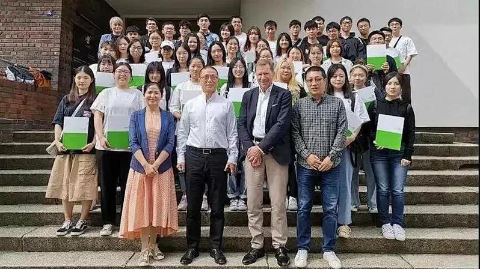

×

本专业立足宁波，依托世界货物吞吐量第一大港、中国和中东欧国家经贸合作试点城市以及发达的民营与外贸经济，顺应“一带一路”建设和长三角一体化高质量发展，培养具有国际视野的应用型、复合型、创新型国际贸易人才。

专业图片来源：浙江万里学院本科招生网国际经济与贸易
把国际贸易知识、跨文化沟通、数据能力和职业素养整合到真实学习路径里。
熟悉国际经济与贸易规则和惯例，理解全球市场与区域合作格局。
能够适应数字贸易、跨境电商和复杂多变的国际经贸环境。
掌握贸易实务、商务谈判、国际结算与数据分析等关键技能。
具备良好的职业道德、团队协作能力和面向企业真实问题的执行力。
网站把课程、竞赛、工具、班级事务和留言反馈集中到一个更清晰的入口。
微观经济学、宏观经济学、国际贸易实务、国际金融、计量经济学等课程构成专业基础。
通过学科竞赛、外贸企业实习、跨境平台训练与商务沟通场景提升实操能力。
对接外贸公司、物流货代、跨境电商、银行保险国际业务及升学深造等路径。